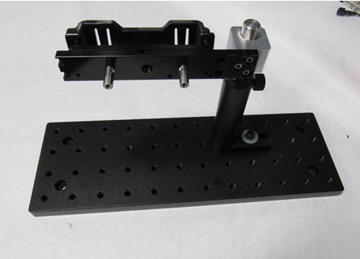
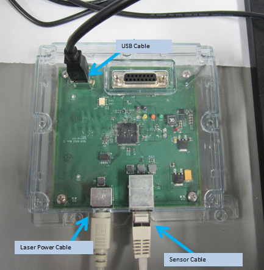
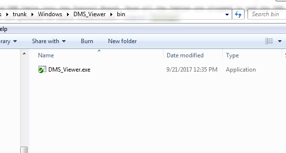
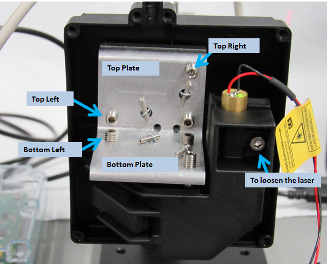
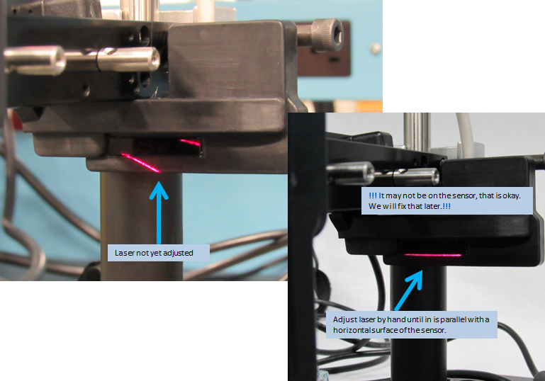
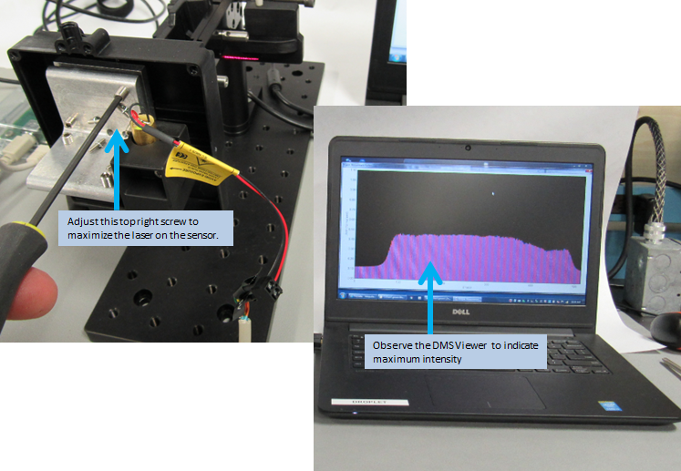
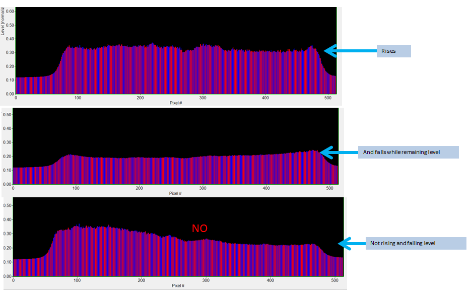
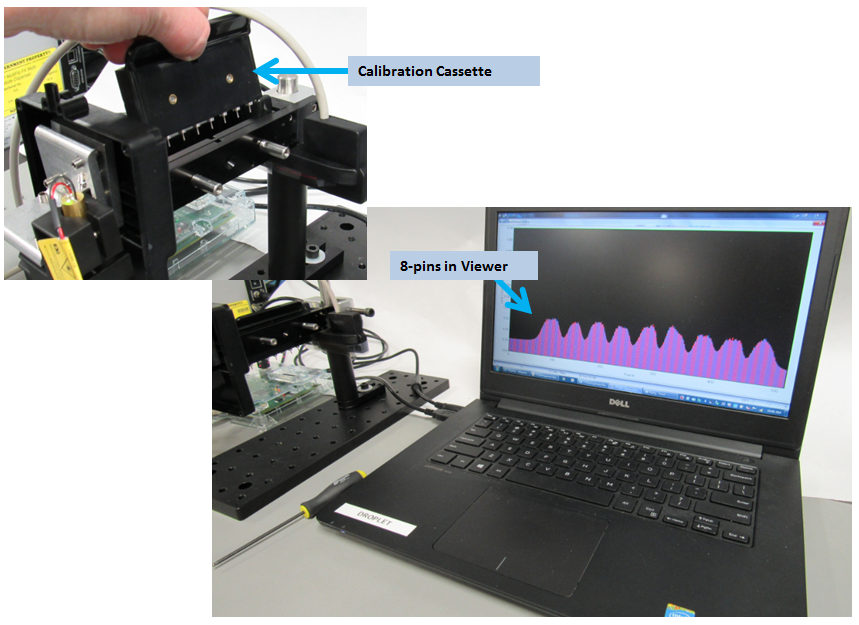
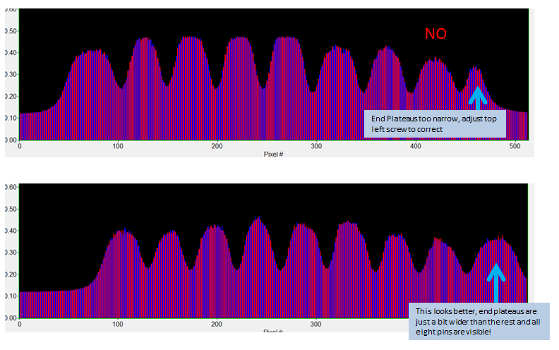
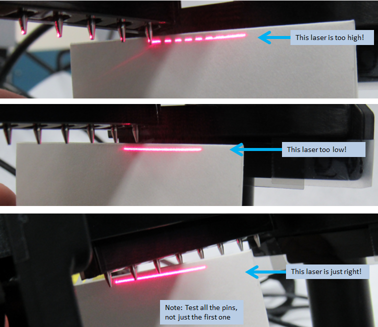

9. Calibration¶
9.1. Introduction¶
This section will review how to align the laser with the sensor and how to calibrate the system, prior to it’s use for tracking dispenses.
9.2. Alignment¶
Alignment of the DMS can occur on a Multiflo unit or as a stand alone procedure. However it will require the DMS be attached to the cassette holder used on a typical Multiflo machine. Should these units be planned for retro-fit in the field on an existing unit, it is expected they will be aligned prior to field installation. For this reason, a stand alone unit designed for holding the DMS assembly during alignment is favored.
To complete the alignment for the DMS assembly, you will need the additional items as listed in Table 9.1.
| Items | Notes |
|---|---|
| DMS Assembly | |
| Control Board Assembly | |
| USB Cable | to power the control board and communicate with the DMS.Viewer.exe |
| DMS_Viewer.exe | located here: C:UsersamvDesktopDroplet DocstrunkWindowsDMS_Viewerbin |
| Laptop Computer | to run the DMS_Viewer.exe |
| 3/32 Hex Driver | to adjust the Cone and Oval set screws and attach the DMS assembly to alignment station |
| 7/64 Hex Driver | to adjust the laser |
| Alignment Stand | optional and recommended |
| Calibration Cassette | |
| Real Dispense Cassette | any volume is fine |
Fig. 9.1 Alignment Set-Up
9.2.1. Alignment Stand¶
The current alignment stand is a simple optics breadboard with mounts. Note the one Creare designed and manufactured part used to attach the cassette holder. Drawing of this part is located here: \OLYMPUSProjects7819-Droplet-IITechnical WorkDesignAMV. Fig. 9.2

Fig. 9.2 Alignment Stand
If using the Alignment Stand, attach the cassette holder onto the Alignment Stand.
Fig. 9.3 Alignment Stand with Cassette Holder
9.2.2. Align the Laser¶
Attach the DSM Assembly to the cassette holder as shown in the installation documentation.
Plug the laser power cable, Sensor Cable and USB Cable into the Control Board. Once all the Cables are plugged in and the USB cable is attached to the computer, you should see the laser turn on. If the laser is not powered on check connections. Fig. 9.4
Fig. 9.4 Cable to Control Board Hook-ups
Run the DMS_Viewer.exe, currently located in the Droplet SVN repository \trunkWindowsDMS_Viewerbin. If the laser is not hitting the sensor, there may not yet be any feedback from the Viewer. Fig. 9.5
Fig. 9.5 Link to DMS Viewer.exe
Take off the Optics Housing Cover in order to access the Laser and Cone/Oval point set screws. The XYZ Mount and Adaptor should have been pre-aligned as in Fig. 8.13. If not, return the the Optics Assembly section and start by pre-aligning the Mount and Adaptor, just as in Fig. 8.13.
For the remainder of this section, refer to Fig. 9.6 as a guide to clarify which screws to adjust during this alignment process. Not all screws will need to be adjusted.
Fig. 9.6 Set Screw Reference
Un-tighten the screw holding the laser in place and by hand, move the laser until the beam is parallel to a horizontal surface of the sensor. It’s okay if it doesn’t hit the sensor yet. Once parallel, tighten the laser into place. Fig. 9.7
Fig. 9.7 Adjust Laser until it is parallel to a horizontal surface on the Sensor Assembly
Using the Top Right Set Screw, turn to adjust laser height until it reaches maximum intensity on the sensor. Use the DMS Viewer as a guide. Fig. 9.8
Fig. 9.8 Adjust Top Right Set Screw until maximum intensity is observed on the DMS Viewer
Once highest peak is achieved, tweak the same, Top Right Set Screw back and forth to make sure it rises and falls in unison. Fig. 9.9
Fig. 9.9 Does laser rise and fall in unison? If not, complete next step
If levels do not rise and fall in unison, adjust the Bottom Left Screw in the bottom plate, the test again with the Top Right screw. Adjust these two screws as needed until observing the levels rise and fall in unison. Then leave adjustment set to the highest peak.
Insert the Calibration Cassette. You should see all eight pins in the viewer Fig. 9.10. If not, adjust sensor height.
Fig. 9.10 View all 8-pins of the Calibration Cassette in the Viewer
Adjust the Top Left screw until laser is centered on pins per the DMS viewer. It is centered when the two end plateaus are both wider than any plateau in between the pins. Fig. 9.11
Fig. 9.11 Adjust until image is as above
Remove Calibration Cassette and replace with a Dispense Cassette. Use a business card or other card stock to barely grace dispense tips. Laser should be just under Dispense tips with no shadows for any tips 1-8. If laser is too low, adjust the Top Right Set Screw to adjust height. If shadows appear, adjust the XYZ using the Top Right Set Screw independently and all 3 of the Bottom Plate Set Screws in Unison. Fig. 9.12
Fig. 9.12 Adjust the noted screws until the laser just graces the bottom of the nozzles without creating a shadow
Once the above step looks really good, adjust the height of the sensor to reoptimize signal. Loosen the two screws on the side of the Sensor Assembly and slide unit up or down while watching the DMS Viewer. Once optimized at it’s highest uniform state, re-tighten the screws to secure the Sensor Assembly in place.
Verify the perfection of alignment by adjusting the top Right Set Screw to observe the signal moves up and down in unison. Leave the signal at it’s highest state.
Re-attach the Optics Housing Cover and the unit should be considered aligned! Good Job!!
9.3. Calibration¶
This section describes the process for calibrating the DMS system. The system must first have been aligned before completing the calibration process.
To complete the calibration for the DMS assembly, you will need the additional items as listed in Table 9.2.
| Items | Notes |
|---|---|
| Fully Assembled, Aligned, and Installed DMS | |
| Matlab license | for script dmsi.m located in the Droplet SVN trunk |
| Laptop Computer | to run Matlab |
| USB Cable | for Control board to communicate with the computer |
| Calibration Cassette or pins | |
| Card stock - such as a business card |
Connect the DMS to the control board and computer. Note that the laser is powered on.
Run
dmsi.mlocated in trunk–> Matlab of the Droplet SVN Repository.In the command window enter
dms=dmsiCalibration requires three separate commands, each with three slightly different configurations regarding the laser.
- Use the stock card and block the sensor from receiving any light from the laser. Enter in the command window
dms.calibrate(1) - Remove the stock card and allow light to hit laser. Path from laser to sensor should be clear of any nozzle or calibration pins. Enter in the command window
dms.calibrate(2). - Insert the Calibration Cassette or pins. Enter in the command window
dms.calibrate(3).
- Use the stock card and block the sensor from receiving any light from the laser. Enter in the command window
To view the plot of the completed calibration enter
dms.plot_calibration, two figures will appear on the screen, similar to Fig. 9.13 and Fig. 9.14.If the calibration looks good, enter
dms.store_calibration, to store the calibration.
This calibration is now complete and the DMS is ready to track dispenses.

{kind=link}
{kind=link}
{kind=link}
{kind=link}
{kind=link}
{kind=link}
{kind=link}
{kind=link}
{kind=link}
{kind=link}
{kind=link}
{kind=link}
{kind=link}